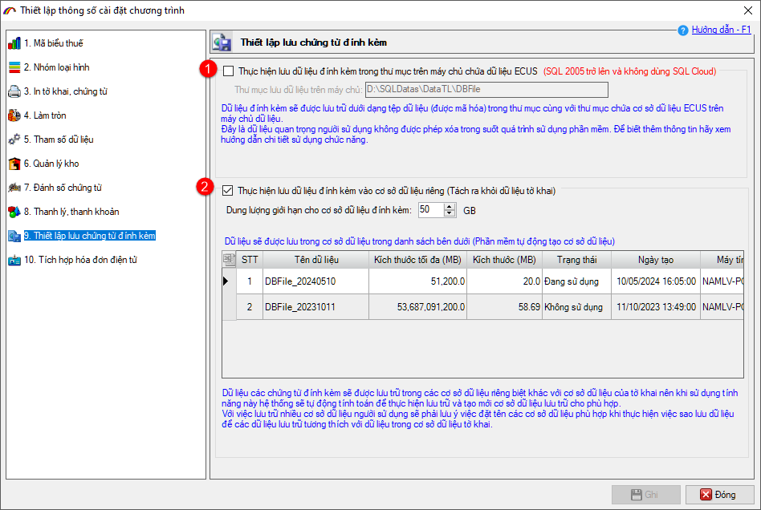
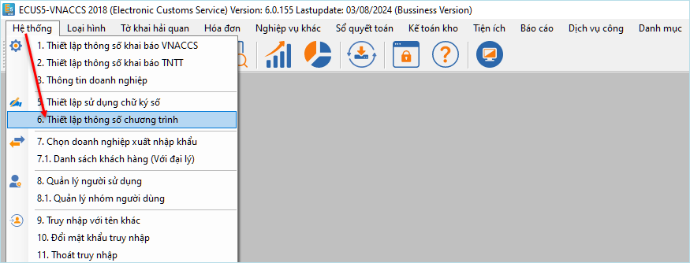
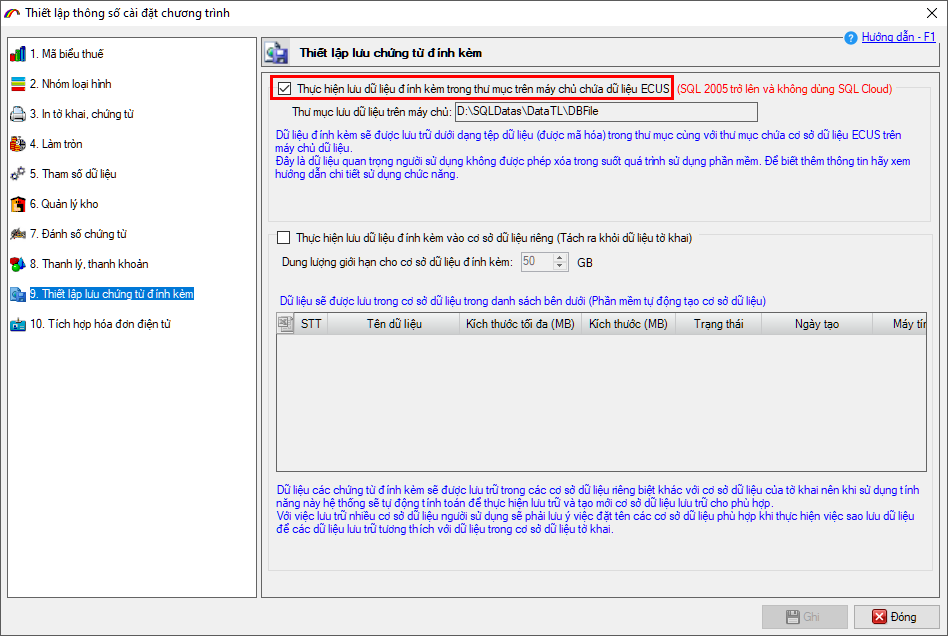
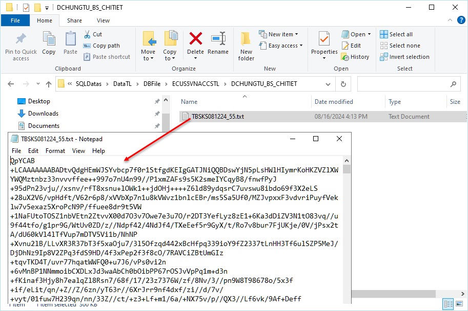
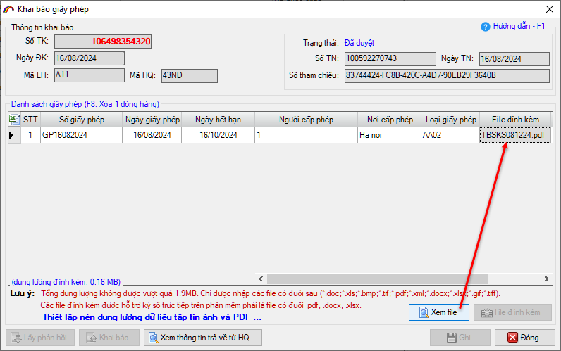
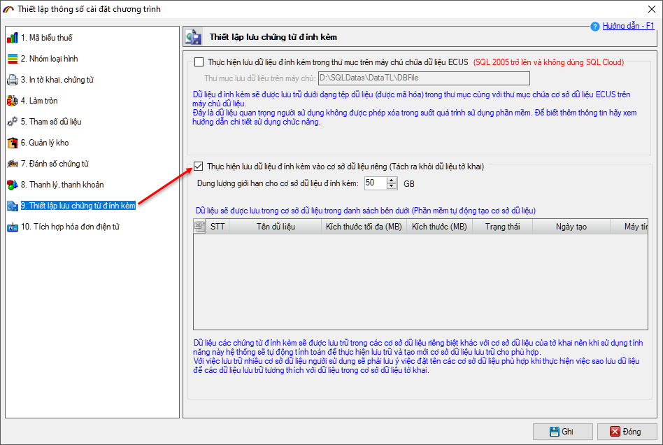
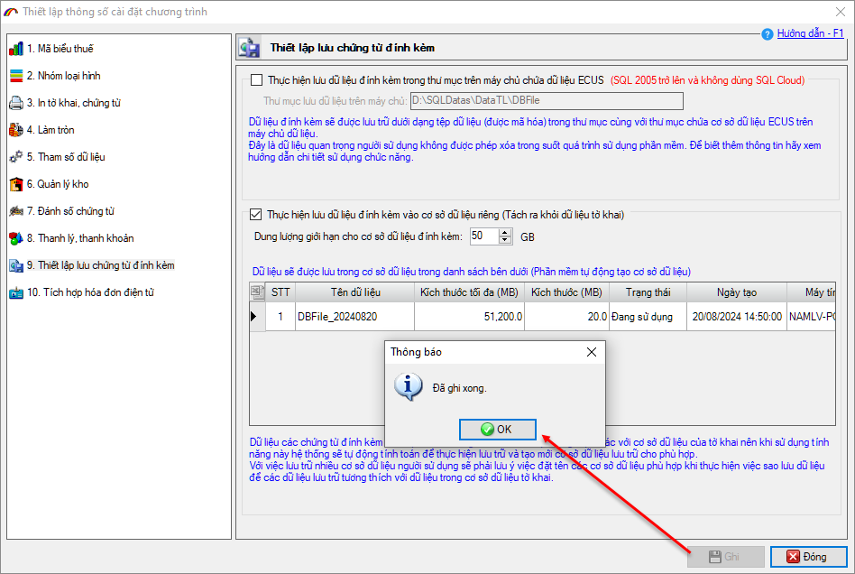
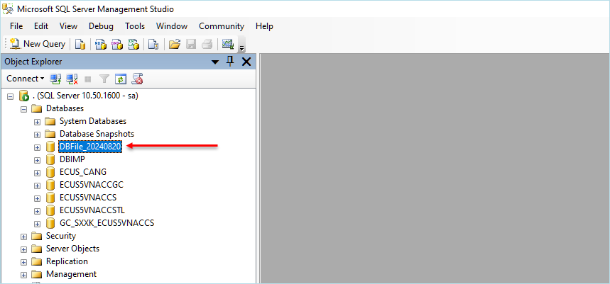

HƯỚNG DẪN CHỨC NĂNG LƯU CHỨNG TỪ ĐÍNH KÈM
(Tách rời với CSDL chương trình)
Chức năng tách CSDL được sử dụng cho các doanh nghiệp có lượng chứng từ đính kèm khai báo tương đối nhiều, dẫn đến cơ sở dữ liệu phần mềm nhanh chóng bị đầy. Để giải quyết vấn đề này, phần mềm ECUS5VNACCS đã bổ sung chức năng cho phép người dùng thiết lập cách thức lưu các file chứng từ đính kèm này tách rời ra khỏi CSDL đang sử dụng.
Có 2 cách để doanh nghiệp lựa chọn:
- Thiết lập để lưu file chứng từ đính kèm ra thư mục trên máy chủ CSDL.
- Thiết lập để lưu chứng từ đính kèm sang một CSDL mới hoàn toàn (tách rời với CSDL phần mềm đang sử dụng).

Để sử dụng, doanh nghiệp truy cập vào menu Hệ thống / Thiết lập thông số chương trình:

Lưu ý: Bạn chỉ nên sử dụng chức năng này nếu lượng khai báo chứng từ đính kèm lớn, gây ra tình trạng phần mềm bị chậm hoặc báo đầy dữ liệu (đối với phiên bản SQL express giới hạn dung lượng dữ liệu được sử dụng tối đa 10GB).
Tại màn hình thiết lập, bạn nhấn chọn mục Thiết lập chứng từ đính kèm:
Cách 1: Thiết lập để lưu file chứng từ đính kèm vào thư mục
Với cách này, dữ liệu chứng từ đính kèm sẽ được lưu dưới dạng tệp dữ liệu (được mã hóa) trong thư mục cùng với thư mục chứa CSDL phần mềm ECUS đang sử dụng + DBFile (thường sẽ là D:\SQLDatas\DBFile).
Để sử dụng cách lưu này, bạn chỉ cần đánh dấu tích chọn vào Thực hiện lưu dữ liệu đính kèm trong thư mục trên máy chủ chứa dữ liệu ECUS (Thư mục lưu trữ sẽ được phần mềm tự động thiết lập).
Lưu ý: Lựa chọn này chỉ được sử dụng nếu phiên bản SQL của bạn đang sử dụng từ SQL 2005 trở lên và không phải bản Cloud (SQL Azure).

Sau khi thiết lập, mỗi khi khai báo chứng từ đính kèm phần mềm sẽ lưu thành file dưới dạng mã hóa.

Bạn vẫn có thể xem file thông qua phần mềm như bình thường:

Doanh nghiệp không được xóa thư mục hoặc đổi tên thư mục lưu file, nếu bạn đổi tên hoặc xóa thì đồng nghĩa với việc bạn không thể xem lại file chứng từ đính kèm của tờ khai trên phần mềm.
Cách 2: Thiết lập để lưu dữ liệu chứng từ đính kèm vào CSDL riêng (Tách ra khỏi dữ liệu tờ khai)
Với lựa chọn này, phần mềm sẽ tự động sẽ tự động tạo mới một CSDL dành riêng cho việc lưu các chứng từ đính kèm. Tên CSDL mới này được phần mềm đặt theo cú pháp: DBFile_YYYYMMdd (trong đó YYYYMMdd là ngày bạn thực hiện thiết lập lựa chọn này).
Để sử dụng cách lưu này, bạn đánh dấu tích chọn vào mục Thực hiện lưu dữ liệu chứng từ đính kèm vào cơ sở dữ liệu riêng (Tách ra khỏi dữ liệu tờ khai).

Bạn có thể thiết lập giới hạn dung lượng tối đa cho cơ sở dữ liệu đính kèm, phần mềm để mặc định là 50GB (khi đạt đến dung lượng tối đa, phần mềm sẽ tạo ra một CSDL mới để tiếp tục lưu trữ).
Nhấn nút Ghi để hoàn tất.

Lúc này, nếu bạn mở SQL Server Management sẽ thấy CSDL mà phần mềm vừa tạo.

Một số lưu ý khi sử dụng chức năng lưu chứng từ đính kèm:
- Chức năng này phù hợp với các doanh nghiệp có lượng chứng từ đính kèm tương đối nhiều hoặc doanh nghiệp đang sử dụng phiên bản SQL express miễn phí có dung lượng bị giới hạn tối đa 10GB.
- KHÔNG được đổi tên thư mục, xóa hoặc thay đổi vị trí thư mục DBFile trong suốt quá trình sử dụng (đối với lựa chọn lưu chứng từ trong thư mục).
- KHÔNG được đổi tên hoặc xóa CSDL DBFile do phần mềm tạo ra.
Nếu có vướng mắc cần hỗ trợ trong quá trình sử dụng phần mềm, doanh nghiệp vui lòng liên hệ trung tâm hỗ trợ khách hàng trên toàn quốc.
Hotline:
- Miền Bắc: 1 9 0 0 4 7 6 7
- Miền Trung - Nam: 1 9 0 0 4 7 6 8
Bản quyền © thuộc về Công ty TNHH Phát triển công nghệ Thái Sơn